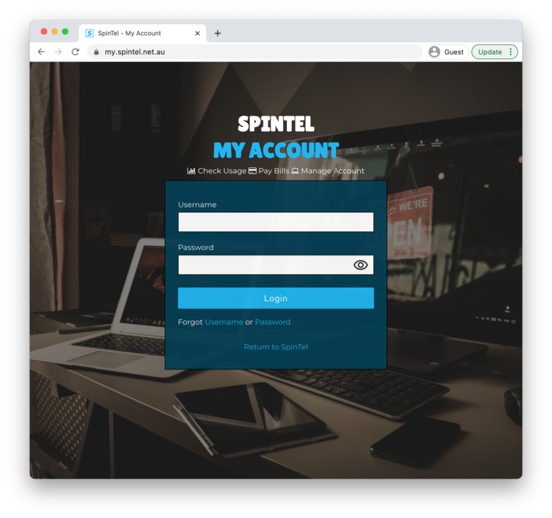

Hacking my ISP to get every customer's personal details
Most of my experiences dealing with internet providers have been negative - you're only in contact with them when they're over-charging or under-delivering. However usually the portal is a seamless task, I mean I'm only trying to check how much of my 250GB I have remaining for the month (the perils of not being able to get a wired internet connection to our rental house, meaning we're on the 4G plan with the highest data). But signing up to Australian internet provider Spintel's online portal sent my spidey security senses tingling, it wouldn't accept the password I'd generated. So I tried changing it a bit, and realised by removing the inverted commas it allowed me to set my password. Interesting. This made me think there may be an SQL injection vulnerability but after playing around there all seemed okay. I think instead they were stripping out the inverted commas and subsequent characters. But still, a sign of perhaps not the strongest dev team, so I decided to explore further.

So where do we begin?
So what do we do? Open up Chrome's Devtools, open the network tab, tick preserve log and get browsing of course! In the network tab, each request sent and recieved is logged, with their request, response and query string parameters. Here we are able to view all the data being sent and received from this website's server to your computer. Something I notice in these requests is the number 0000XXX812 (this is changed to protect the innocent btw) appears quite a bit. Using the find (the cmd + F thing) feature I'm able to spot in a request that the number is a user ID, which must be related to me!
{
"x_value": 1,
"is_return": false,
"session_only": true,
"user_id": "0000XXX812"
}After browsing the site for a while, I found seven requests that I send off a request that includes my user ID in the query string, and I receive back HTML pages of content. Do these pages check that the ID requested matched the user logged in? Let's find out.
- In Chrome Devtools network tab, right click on a request including the user ID. Select Copy > Copy as curl
- Open up Terminal, paste the curled request in.
- Hit enter and the response will be shown
- In the curled request, change the user_id by 1.
- Hit enter again showing the second response
- Compare the two results
What are we looking for here?
Data can be returned in many formats, with the most common being HTML, javascript, css, json object, or images. Usually what differs between users is HTML or json, where as css and javascript usually are the same for all users on a given site.
In my case, the response was HTML. A quick read showed most of the requests were returning error messages along the line of 'Content could not be retrieved' or 'You do not have permission to access this'. However, one seemed different.
The vulnerability
In the My Services section of the Spintel site, the 'My Account' button took me to https://my.spintel.net.au/services/0000XXX812. When I changed this URL to be another users User ID, it still took me to that page, but this time with the other users details. So I quickly checked another 50 or so possible user IDs, and a majority of them returned phone numbers and addresses.
So I hopped onto gmail and shot off an email to Spintel:
When logged in to an account, if I am in 'My Services' and click 'Details' on one of the services, it sends a request to: https://my.spintel.net.au/services/XXXXXXXXXXX where XXXXXXXXXXX is what I assume is the user ID (for me it was 0000XXX812). The request returns a web page with my home address and phone number embedded in it. However, if I change the number on the end of the service from 0000XXX812 to another number such as 0000XXX813, I receive someone else's home address and phone number embedded in the page that is returned.
In a hackernews thread I recently read regarding leaked insurance records throwawaymath put it well:
Yet another security vulnerability caused by:
- Using sequentially incremented integer sequences as object IDs, and
- Failing to protect sensitive data using some kind of authentication and authorization check.
While point 1 is not the issue in itself, point 2 is where things get problematic. It allows a malicious user to iterate through every possible user ID and access each user's details, storing the data and potentially selling it later.
Spintel got back to me pretty quickly, and closed off the issue within five days which I was surprised by. And they also offered me four months of free internet! What a treat.
Enjoy that? Pop your email in here cause over the next few weeks I'm working on a few more blog posts in a similar vein.